Conta e preferências
Tela 66 · Conta
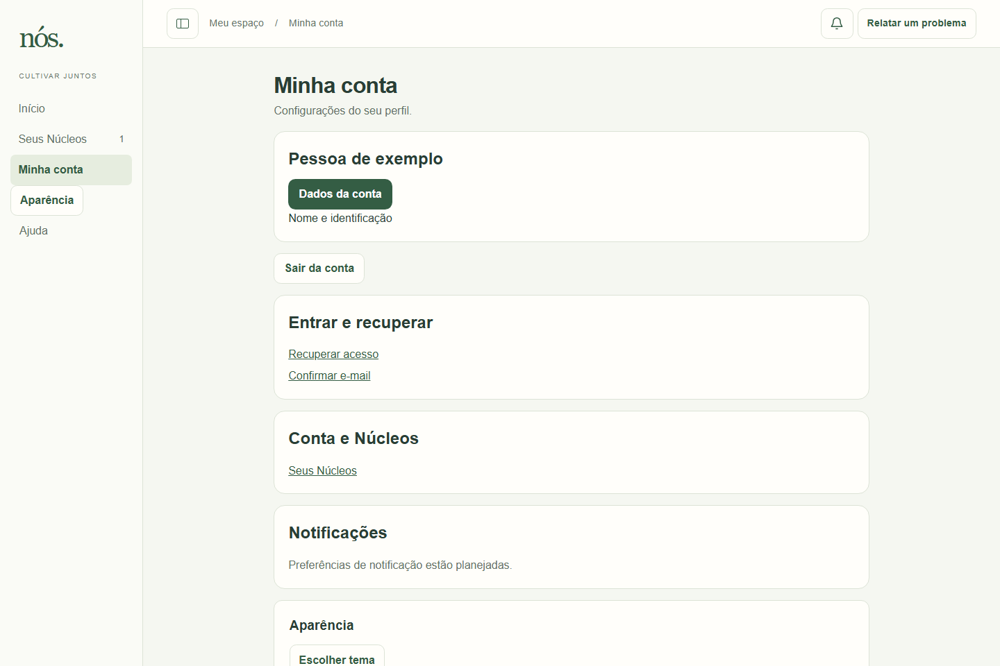
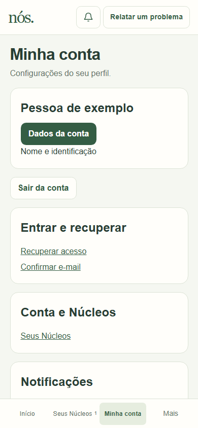
Tela 66 · Aparência

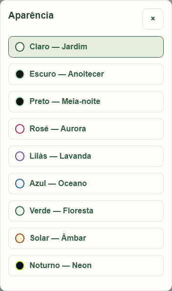
Tela 67 · Privacidade
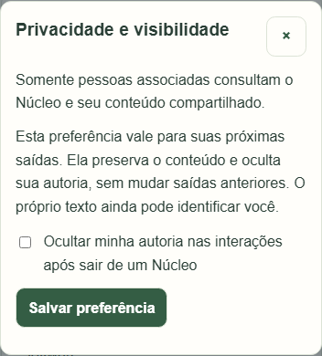
Tela 69 · Apagar minha conta


Tela 70 · Relatar um problema

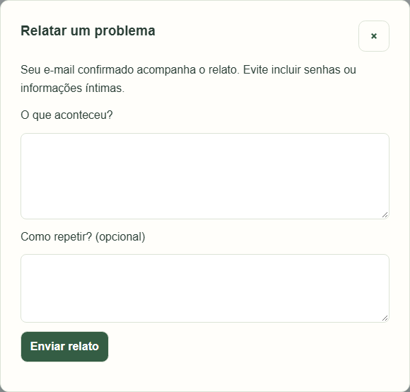

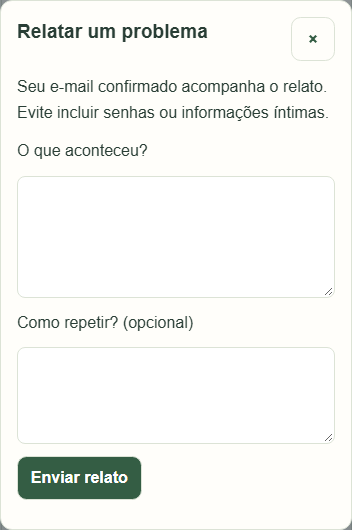
Validação local de A10 e A11 em Chromium a 1440 × 960 e 390 × 844 pixels. As capturas mostram a interface autenticada com conta e Núcleo descartáveis. Os diálogos estão recortados.
As comparações anteriores do Atlas têm o antes e o depois de Conta e preferências e prévias e navegação. Essas galerias registram as composições da etapa anterior. As capturas abaixo acrescentam evidência do aplicativo Angular.






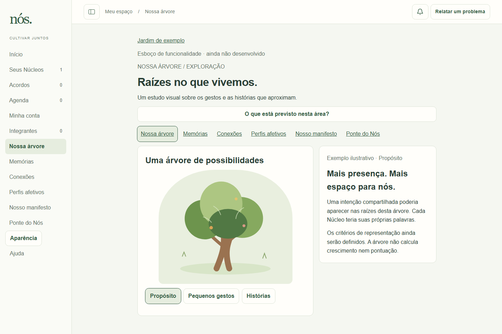
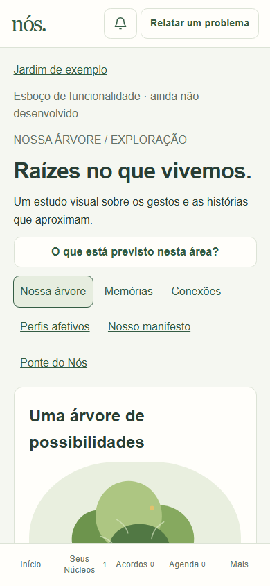
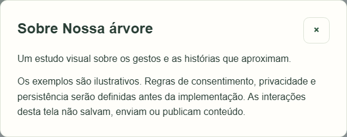
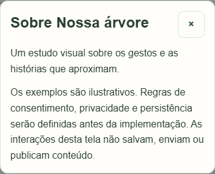
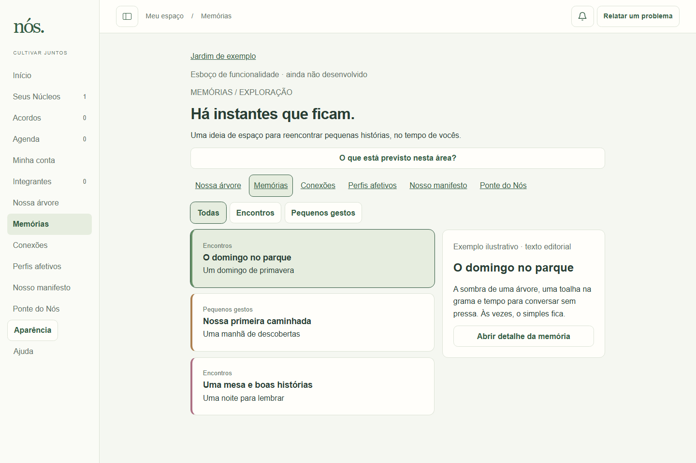
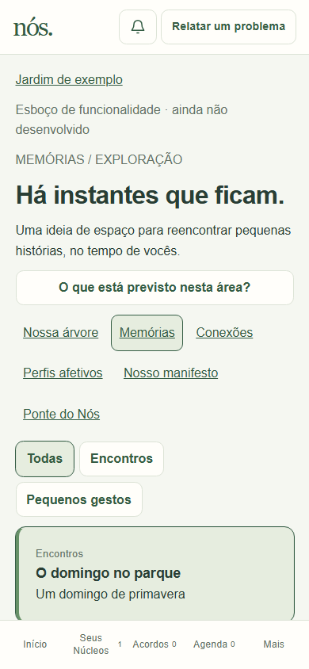
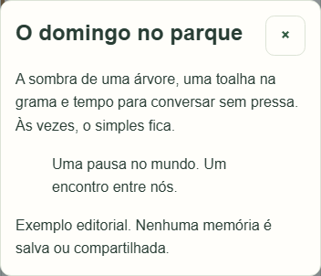
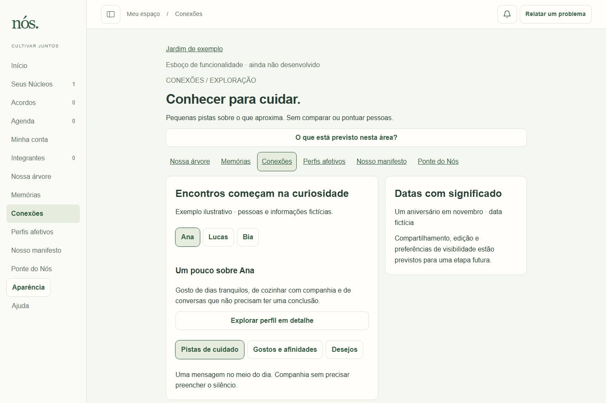
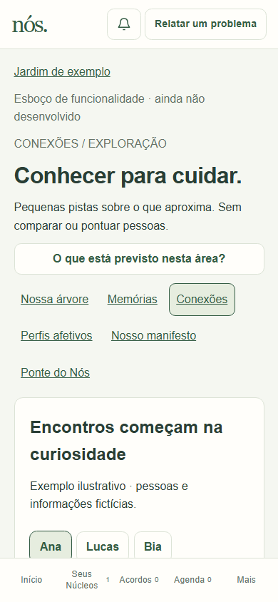

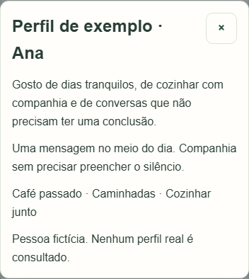
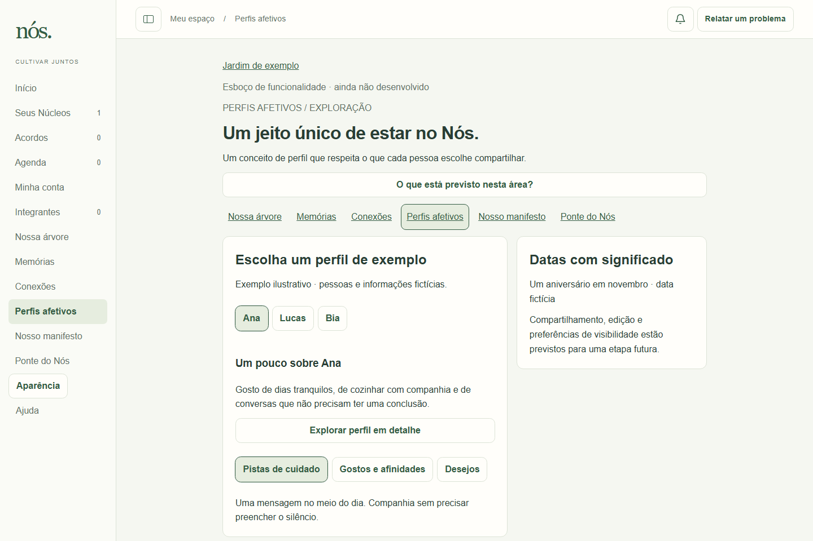
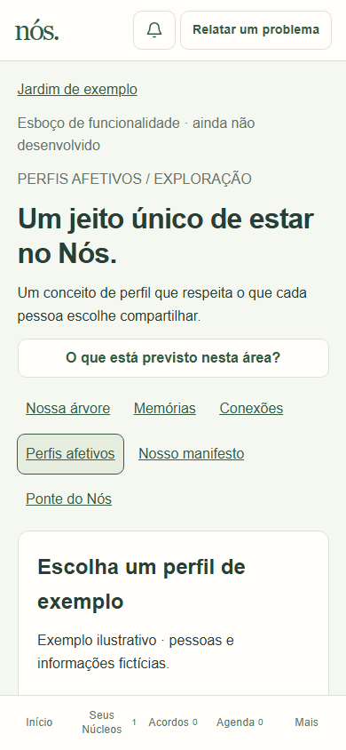
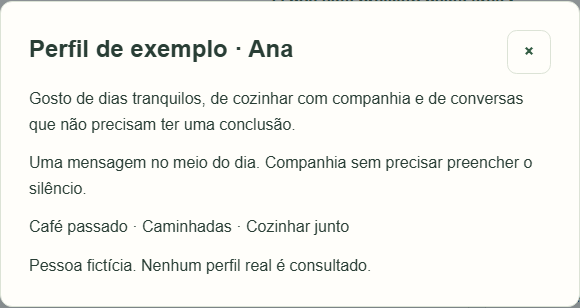

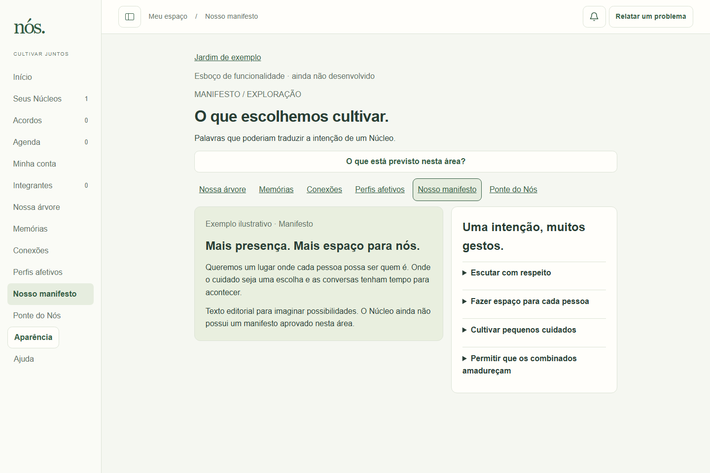
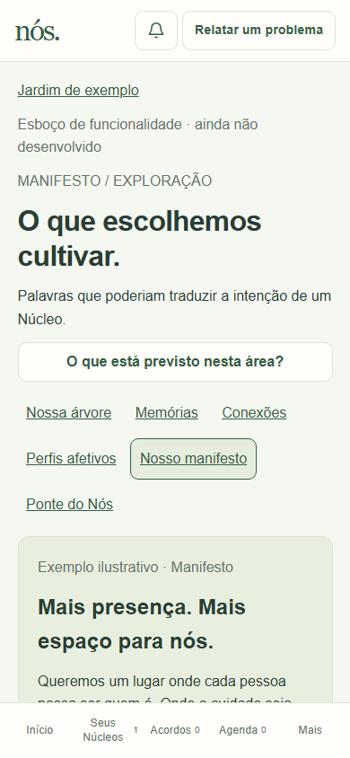
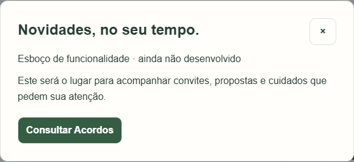
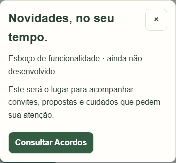
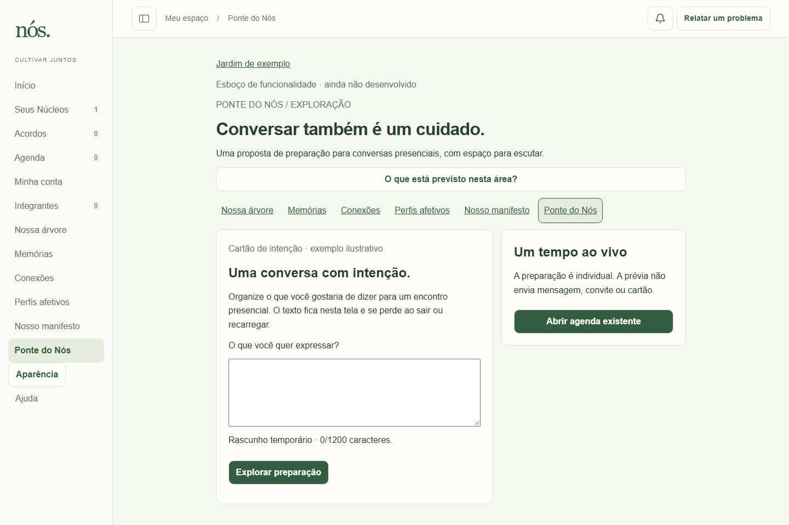
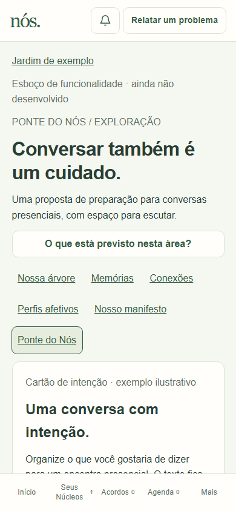